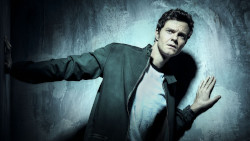
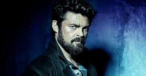
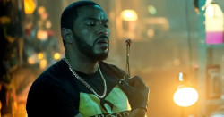
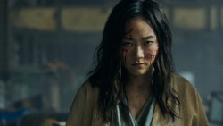
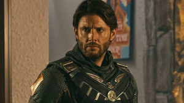

Os Garotos
Hughie
Hughie vivia uma vida medíocre em sua zona de conforto, com um emprego mediano e sem grandes aventuras. Quando sua namorada é morta acidentalmente pelo herói A-Train, sua vida dá uma guinada. Completamente perplexo com o descaso do super em relação ao acidente e com a tentativa da Vought de esconder a morte, Hughie começa a alimentar um desejo de vingança. Aos poucos, Hughie vai mudando seu temperamento passivo, mas mantém seus princípios e se torna extremamente leal aos companheiros de The Boys, arriscando sua vida para ajudá-los em diferentes ocasiões. Seu posicionamento, inclusive, o fez ganhar o respeito dos demais integrantes do The Boys.
Billy Butcher
Atual líder do The Boys, Billy Butcher, foi o responsável por recrutar Hughie logo no início da série de TV. Os episódios deixam claro que esta é a segunda vez que os demais integrantes do grupo de reúnem, após terem tido grandes perdas em algum momento no passado. O seu ódio crescente por Homelander - após descobrir que o herói estuprou Becca, esposa de Butcher - motiva seu completo desprezo por todos os supers. Embora tenha como principal objetivo, enquanto líder do grupo, lutar contra os crimes cometidos pelos supostos heróis, já deixou esse foco de lado mais de uma vez quando teve oportunidade de alcançar sua meta pessoal: se vingar de Homelander.
Francês

Conhecemos Frenchie quando Butcher o recruta para retornar ao The Boys. Desde então, seu passado se mantém um mistério na série. O que sabemos é que Frenchie é um expert em armas e bombas, sendo o responsável por tentar criar recursos bélicos para que um grupo de humanos normais tenha alguma chance sobre os Supers. Embora pareça durão e violento - e seja! - ele é o único a se sensibilizar com a situação de Kimiko/Fêmea quando o The Boys a encontra presa como um bicho. Aos poucos, ele vai conseguindo estabelecer algum tipo de comunicação com ela, que passa a integrar a equipe.
Leitinho
Conhecemos Leitinho quando ele já está trabalhando em uma prisão e leva uma vida estável com sua esposa e filha, após ter se afastado da primeira formação do The Boys. Ainda assim, ele se deixa convencer pelo novo convite de Butcher para retornar ao grupo. Estratégico, metódico e extremamente inteligente, é um dos integrantes mais próximos ao líder do The Boys e provavelmente o mais equilibrado da equipe. No final da primeira temporada, se torna um fugitivo procurado, assim como os demais membros do grupo, e tem uma séria briga com sua família, por obrigá-los a se esconder também para se protegerem.
Kimiko
A primeira temporada da série nos apresenta a Kimiko quando os membros do The Boys a encontram presa em uma espécie de gaiola, em péssimas condições. Imprudentemente, Frenchie liberta a garota, que mata seus captores facilmente a sangue frio. Mas o ato de Frenchie não foi em vão. Mesmo com sua natureza animalesca e sua sede por matar, Kimiko salva a vida de Frenchie e acaba se unindo ao The Boys. Natural do Japão, Kimiko tem seus poderes explicados na série com o fato de ela ter passado por experiências no Exército da Salvação, um grupo de terroristas que os obrigaram a servir para ele por anos.
Soldier Boy
Soldier Boy ainda não teve o destaque que nos foi prometido - já que só apareceu em flashbacks e em uma curta cena do quarto episódio. Por isso, ainda não temos como classificar seu nível de poder, embora seja especulado que ele se tornou um dos "supers" mais poderosos da trama. Uma paródia viva do Capitão América, o Soldier Boy fazia parte de outro grupo de "super-heróis", o Payback. Contudo, ele está desparecido há um bom tempo, o que leva muitos a crerem que ele morreu. Quando ele aparece, vemos que é capaz de disparar rajadas fortes de energia - e isso pode acabar representando uma baita ameaça para o Capitão Pátria e a Vought, já que nem mesmo Kimiko conseguiu se recuperar da explosão.